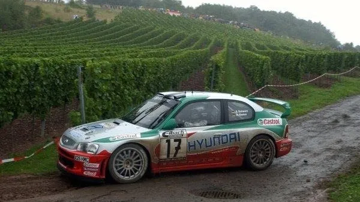
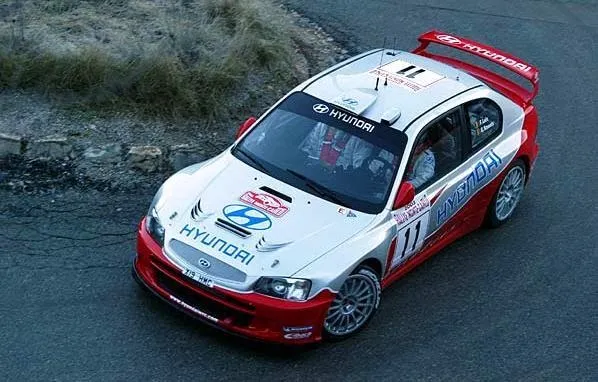
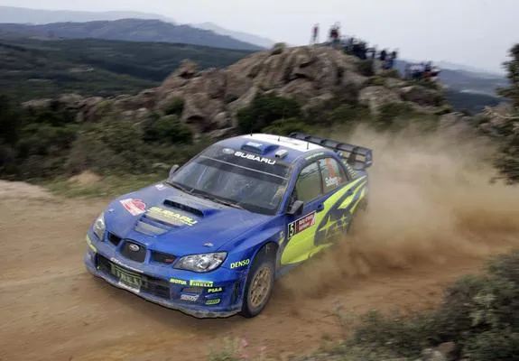
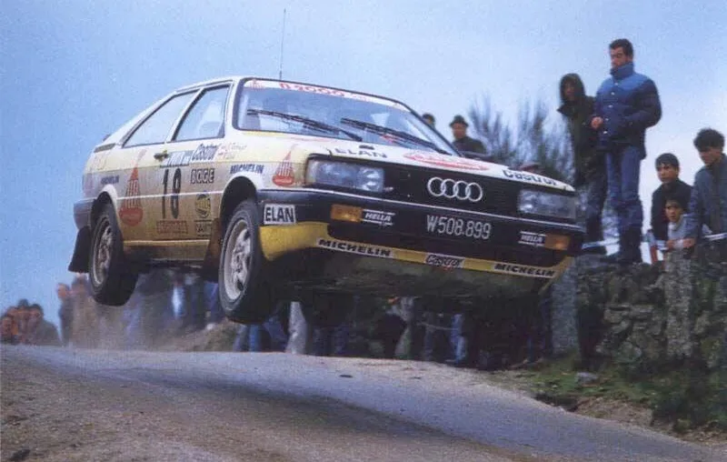
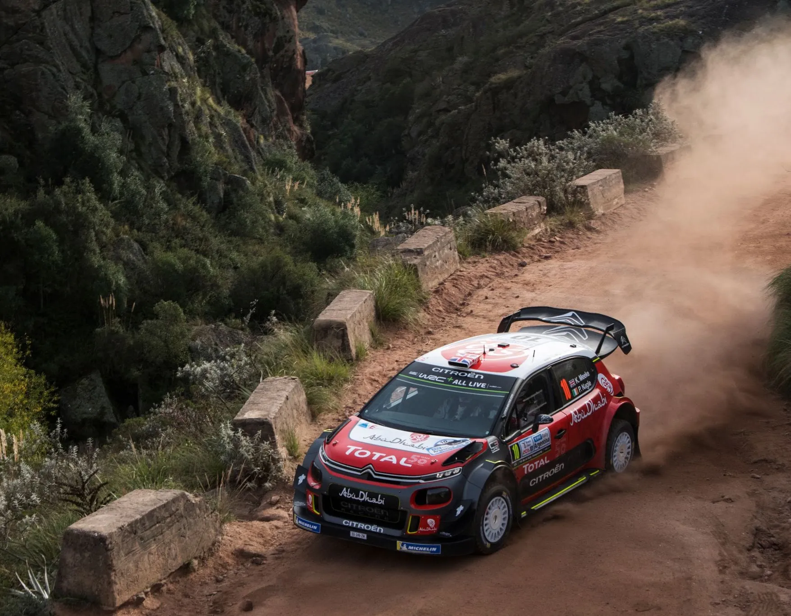
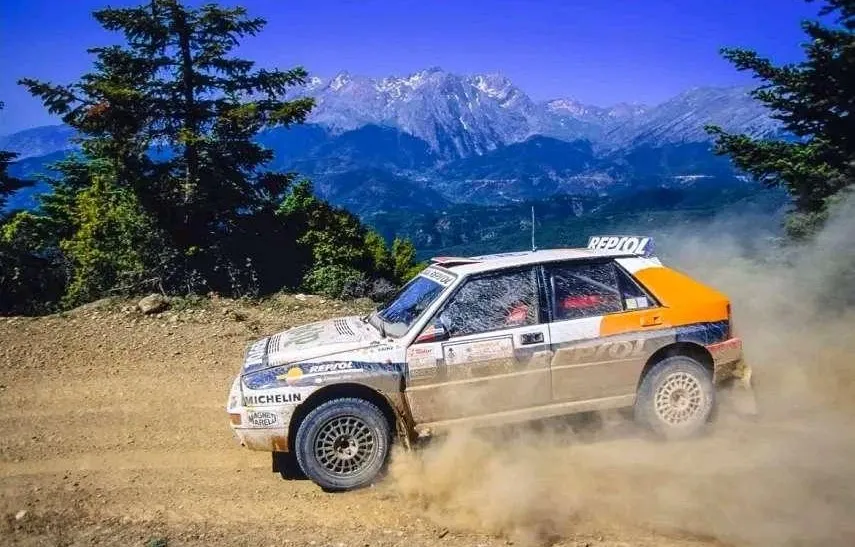
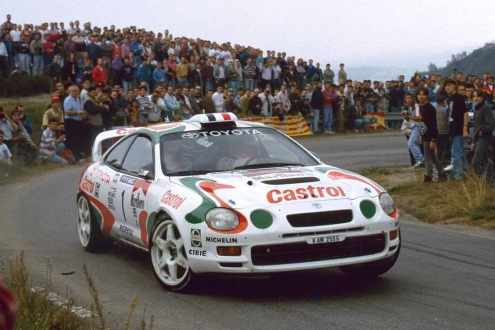
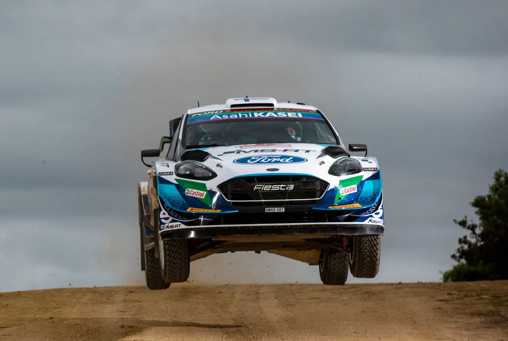

7 times WRC Manufacturers had Seasons to Forget
We tend to remember the champions after every year, but what about the teams or drivers who had absolute stinkers? Here's a list of 7 Manufacturers that had seasons to forget!
7. Hyundai World Rally Team - 2003

2003 was the last year of Hyundai's Motorsport Development era, and the team didn't even get to finish it. The project was in serious financial trouble with Hyundai withholding Motorsport Development's payments throughout the year. The already slow Accent wasn't developed after the 2002 season, and the programme was ran on a very small budget. The team only had 3 points finishes throughout the year, with their most competitive outing being in the season opener in Monte Carlo, when Armin Schwarz finished 7th, "only" 7 minutes off eventual winner Sebastien Loeb. The team collapsed mere days before then Sanremo Rally, and didn't rejoin the WRC until 11 years later, in 2014.
6. Subaru World Rally Team - 2006

The beginning of the end for Subaru's WRC journey. After a solid 2005 campaign (only for Petter Solberg, since Chris Atkinson and Stephane Sarrazin were also part of that team), Subaru debuted a new car for the 2006 season, with high expectations. Unfortunately, the car was a downgrade on almost every area compared to its predecessor. The car was understeery, a mess to drive and also unreliable. The only surface the car showed speed in, was on rough gravel, and that was only before it inevitably broke down. It was the team's first winless season since 1992, with Subaru only scoring 4 podiums, all courtesy of Solberg, with the team helped by Loeb missing the final few rounds. To put into a perspective how bad this season was for Subaru, the team would have likely lost out to the privateer OMV Peugeot team had they competed in every round. The privateer Peugeot's lead driver, Manfred Stohl, finished ahead of Solberg by 14 points, scoring the same amount of podiums. To go from a championship challenger to being beaten by Manfred Stohl in just one year, is astounding, and it's mostly because of the 2006 Impreza.
5. Audi Sport - 1987

The start of the Group A era was really just Lancia against themselves. But despite that, Audi's season was so bad, that it essentially made the German based brand leave rallying after the season. Audi had left the WRC after the events of Portugal 1986, but rejoined for the 1987 with the Audi 200 Quattro. The car didn't have the same prestige as the S1 Quattro, in fact the car is most known for being a boat, with the car being 120kg overweight. The team scored a 1-2 in Safari, an event that Lancia skipped, with that being the team's last ever win. The only notable result Audi had in '87, was Mikkola's 3rd place in Acropolis. After the end of the season, Audi withdrew factory support, acknowledging that the Audi 200 or 80 wouldn't be able to match the Delta any time soon.
4. Citroën Total Abu Dhabi WRT - 2018

Jaanus Ree / Red Bull Content Pool
After a rather subpar and chaotic behind the scenes 2017 season, Citroen hoped that 2018 would be a better year for the French marque. However, 2018 would be more of the same, but worse. Citroen were still the only one out of the 4 manufacturers to use 2 cars full time when every one else was running 3, and when they did, most of the time it was for Khalid Al-Qassimi, who brought Abu Dhabi sponsorship to Citroen. Citroen sacked their lead driver Kris Meeke, after the Northern Irishman went on a poor run of form, crashing out of 4 out of the 6 rallies. After that, the season was pretty much over for Citroen, with the team now having arguably the least prestigious lineup out of anyone, and with the C3 also slowly losing touch with the Yaris the i20 and the Fiesta, especially on gravel. Sebastien Loeb gave Citroen a popular win after an inspired tyre choice on the morning of the last day of Rally Catalunya, but that was as good as the season got for the French team. They scored 1 win and 4 podiums, and finished last in the standings, some 87 points behind M-Sport in 3rd. Their season was so bad, that none of their drivers featured in the top 10 of the driver's standings come the end of the season. The team would leave the sport after a similarly challenging 2019 campaign. If you want to learn more about Citroen's downfall, I've made a video about it, you can click here if you want to watch.
3. Jolly Club/Lancia - 1993

Lancia's dismal 1993 season was also mentioned in my "7 of the Worst WRC Driver Moves" blog post from last year. Lancia withdrew manufacturer support at the end of 1991, and Jolly Club effectively became the factory team from 1992 onwards. They won the Constructors crown in 1992, and Juha Kankkunen and Didier Auriol finished the season in 2nd and 3rd in the driver's standings. For 1993, Kankkunen and Auriol departed for Toyota, with 1990 and 1992 champion Carlos Sainz heading the other way. Sainz was poached by Jolly Club, after a sponsor conflict between Repsol and Castrol made the Spaniard leave Toyota. Jolly Club promised Sainz that the Delta would still be developed throughout 1993, despite Lancia having withdrawn their support. However, the car only saw minor updates throughout the year, and the Delta, that was already slowly falling behind its competitors would end the season as the slowest, or atleast as the car with the least potential. The team would only score two podiums in 1993, with Aghini finishing 3rd in Portugal, and Sainz finishing 2nd in Acropolis. Their star signing, Sainz, would only score points in 3 rallies, and he would finish 8th in the standings. A lowlight of the team's season came in San Remo, in their home rally, where Sainz finished 2nd but was disqualified for using illegal fuel. That would be all she wrote for Lancia in the WRC, as for 1994 there would not be any team running the Deltas, with Jolly Club switching to Ford.
2. Toyota Castrol Team - 1995

At the end of 1994, Toyota debuted a new car to replace the Celica Turbo ST185 with which the team won 3 Drivers titles in a row with Sainz, Kankkunen and Auriol from 1992 to 1994, and also 2 Constructors titles in 1993 and 1994. The new car, the Celica Turbo ST205, was debuted by Tomas Jansson in the 1000 Lakes Rally, and was also used by Juha Kankkunen in Sanremo and Wales, as well as in some other non WRC events, like the APRC championship round in Australia. Eventual championship winner Didier Auriol interestingly chose to not use the new car, not wanting to gamble on his title chances. For 1995, all drivers had the new car, but with mixed results. The new car wasn't as competitve as the ST185, and was also plagued by mechanical gremlins. Auriol won in Corsica, and Kankkunen was there or thereabouts in the title fight, with 4 podium finishes. The Finn would ultimately be ruled out from the fight, after retiring from the lead in Catalunya.
Speaking of Catalunya... that's when the big brown object hit the fan. Didier Auriol who had finished 3rd, was excluded after his car was found to have had an illegal turbo restrictor. The way Toyota had made that restrictor, was so it would pass all FIA tests, meeting all regulations etc, but when it was put in the car, the restrictor would allow more air to flow through, and thus it would let the engine produce more power. How much power? According to estimates up to 50bhp! And all that from a 5mm movement of the restrictor when the car accelerated. When the engine was turned off, then the restrictor would move back to it's "legal" place and that was it. Max Mosley who was the FIA president at the time, called Toyota's restrictor plate, "The most sophisticated device he'd ever seen in 30 years of motor sports." Toyota were promptly disqualified from the 1995 standings, and were also given a 1 year ban for 1996. They'd also skip 1997 to develop the Corolla WRC for the 1998 season.
1. M-Sport Ford - 2021

Jaanus Ree / Red Bull Content Pool
After losing Sebastien Ogier in 2018 and Elfyn Evans in 2019, M-Sport went into survival mode for 2020, waiting for the new Rally1 regulations to debut for 2021. However, the pandemic delayed the introduction of those regulations by 1 year, meaning M-Sport where in an even worse position for 2021. The team would run 2 cars, same as 2020, with Gus Greensmith being the only full time entry, and the second car being shared between Teemu Suninen and Adrien Fourmaux. At the time, this was widely looked at, as one of the worst lineups M-Sport had ever have. Gus was seen as nothing more than a pay driver, Fourmaux sure was seen as someone talented, but not as someone worthy of a WRC seat *yet*. And even worse, it looked like the team had reduced their best driver to a part time campaign. Suninen was let go mid-season, with his last rally with the team being in Estonia. Fourmaux and Greensmith competed in all of the events after that, with the team's best result being 4th and 5th in Safari. The car was undeveloped and lacked pace compared to the i20 and the Yaris. The two M-Sport drivers were effectively in no man's land, usually left to battle it out in the unofficial WRC 1.5 class of Katsuta, Loubet and themselves. 2021 also saw M-Sport struggle with reliability, as a new engine update gave the drivers some problems. All in all, this was perhaps M-Sport's most forgettable season in the WRC, with the team finishing 3rd, a massive 263 points behind Hyundai in 2nd.


Comments